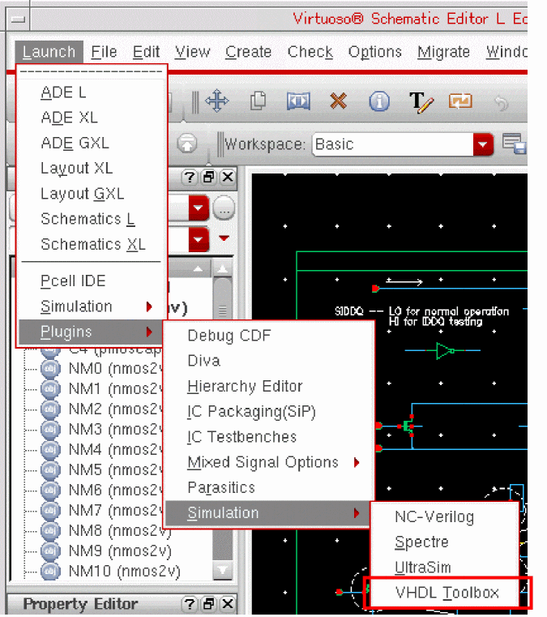
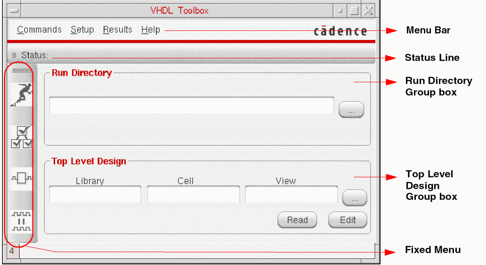
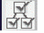
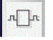

2
Introducing the VHDL Toolbox
VHDL Toolbox is an integrated environment that you can use to generate netlists and run simulations. The toolbox, through a netlister, can generate default VHDL testbenches or you can include external testbenches before running a simulation. The generated netlist can then be simulated and debugged using the toolbox, or in the interactive or batch mode by using the SimVision tool (xrun utility).
In this chapter, you will learn about the following topics:
VHDL Toolbox Features
VHDL Toolbox uses OSS-based traversal techniques that provide high level of customization. The following are the features the toolbox:
-
Ability to set various options from the
.simrcfile. - Built-in support for pre- and post-netlist functions for user customization. For more information, refer to Customizing Pre- and Post-Processing Functions.
- Automatic data type propagation from the leaf-level VHDL to the top-level schematic ports.
-
Improved VHDL netlist generation that provides:
- Netlisting of HED configuration designs.
- Support for inherited connections.
- Support for proxy symbol views that can be used to resolve inherited connections.
- Support for resolving data type conflicts in hierarchical netlists. For more details, refer to Support for Type Conflict Resolution.
- Support for generating netlists by using Cadence name mapping or by preserving case.
- Ability to generate single or multiple netlist files.
- Support for two types of library bindings–binding the design units to the associated DFII library or to a single logical VHDL library.
For more details, refer to Chapter 3, “Netlisting a VHDL Design.” -
Support for simulating Verilog modules at the leaf level. For more details, refer to VHDL Setup - Simulation Form.The OSS-based netlister requires a .cdb or .oa database file in the lib/cell/view directory. Therefore, before netlisting, ensure that a database is created for the text views used in the design. For more details, refer to the VHDL Text View Database section.
Opening the VHDL Toolbox GUI
There are two ways to open the VHDL Toolbox:
To open the VHDL Toolbox from the CIW:
-
In the CIW, choose Tools – VHDL Toolbox.
The VHDL Toolbox window is displayed as shown in the figure below.

To open the VHDL Toolbox from the Virtuoso Schematic Editor window:
-
In the Virtuoso Schematic Editor window, choose Launch – Plugins – Simulation – VHDL Toolbox, as displayed in the figure below.
.The VHDL Toolbox window is displayed.
Alternatively, you can press theAlt+l,p,sandtkeys to open the VHDL Toolbox.
VHDL Toolbox GUI
The VHDL Toolbox GUI consists of the following main areas:
- Run Directory Group Box
- Top Level Design Group Box
- Menu Bar
- Status Line
- Fixed Menu
-
Command Buttons

Run Directory Group Box
You use the Run Directory group box to specify the name of the directory that you want to use for netlisting and simulating the VHDL design and for creating a waveform database. You can create a new directory or specify the name of an existing directory. You can also specify a relative directory name in the Run Directory group box instead of specifying the complete path. Relative names are automatically expanded when you move to the next field.
Top Level Design Group Box
The Top Level Design group box contains fields for specifying the library, cell, and view names of the top-level design. You can either type the library, cell, and view names in the Library, Cell, and View fields, respectively, or select the required values by using Library Browser. To open Library Browser, click the ellipsis button next to the View field. You can specify the HED configuration in a similar way.
Menu Bar
The menu bar provides access to the commands and forms required to generate a netlist and to run the simulation for your VHDL design. The menu bar contains four menus: Commands, Setup, Results, and Help.
Commands Menu
The Commands menu contains commands as shown in the figure below.
- Initialize Run Dir: Initializes the specified run directory for netlisting and simulation and validates the top design. For more information, refer to Chapter 3, “Netlisting a VHDL Design.”
- Generate Netlist: Triggers the netlister to generate the VHDL hierarchical netlist for the design specified in the Top Level Design group box. The commands on the Results menu become available after a netlist is generated. For more information, refer to Chapter 3, “Netlisting a VHDL Design.”
- Simulate: Triggers the process for simulating a design. For more information, refer to Chapter 5, “Simulating a Netlisted VHDL Design.”.
- Compare Simulation: Compares two waveform databases. For more information, refer to Chapter 5, “Simulating a Netlisted VHDL Design.”.
- Edit Test Bench: Opens the VHDL Create Test Bench form that you use to configure the properties of a testbench. For more information, refer to Chapter 4, “Creating a Testbench.”
- Import: Runs the VHDL import tool that imports existing VHDL text files to a design library. For more information, refer to the VHDL In for Virtuoso Design Environment User Guide and Reference.
- Close: Closes the VHDL Toolbox window. For more information, refer to Exiting the VHDL Toolbox.
Setup Menu
The Setup menu contains the Netlist, Simulation, and Sim Comparison commands that you can use to customize the netlisting and simulation flows. The following figure shows the commands available on the Setup menu:
- Netlist: Opens the VHDL Setup - Netlist form. For more information, refer to Chapter 3, “Netlisting a VHDL Design.”
- Simulation: Opens the VHDL Setup - Simulation form. For more information, refer to Chapter 5, “Simulating a Netlisted VHDL Design.”
- Sim Comparison: Opens the VHDL Setup - Sim Comparison form in which you can specify the names of the Simulation History Manager (SHM) databases to compare. In this form, you also specify the name of the output log that contains the results of comparison. For more information, refer to Chapter 5, “Simulating a Netlisted VHDL Design.”
Results Menu
The Results menu contains the Netlist command that you can use to view the netlisting results in a new window. The Netlist command becomes available only after a netlist is generated in a session. The following figure shows the Results menu:
Help Menu
The Help menu contains options to access help on using VHDL Toolbox and get online support.
Status Line
The status line displays the status of the command that was last run.
Fixed Menu
The fixed menu contains the following frequently used commands:
|
|
|
|

|
|
|

|
|
|
|
Command Buttons
The two command buttons at the bottom of the VHDL Toolbox window, Read and Edit, open in Virtuoso Schematic Editor the design that you specified in the Top Level Design group box.
Exiting the VHDL Toolbox
To exit the VHDL Toolbox from the CIW:
To exit the VHDL Toolbox from the Virtuoso Schematic Editor window:
-
Click the Close button in the upper-right corner of the VHDL Toolbox window.
The VHDL Toolbox window closes.
Return to top